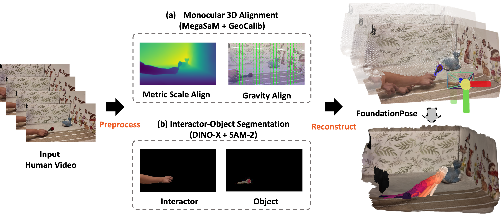

Real-to-Sim Gallery

In this paper, we build a real-to-sim-to-real (Real2Sim2Real) system for robot manipulation policy learning from casual human videos. We propose a new framework, ROSE, that directly leverages casual videos to reconstruct simulator-ready assets, including objects, scenes, and object trajectories, for training manipulation policies with reinforcement learning in the simulation. Unlike existing real-to-sim pipelines that rely on specialized equipment or time-consuming and labor-intensive human annotation, our pipeline is equipment-agnostic and fully automated, facilitating data collection scalability. From casual monocular videos, ROSE enables the direct reconstruction of metric-scale scenes, objects, and object trajectories in the same gravity-calibrated coordinate for robotic data collection in the simulator. With ROSE, we curate a dataset of hundreds of simulator-ready scenes from casual videos from our own capture and the Internet, and create a benchmark for real-to-sim evaluation. Across a diverse suite of manipulation tasks, ROSE outperforms the existing baselines, laying the groundwork for scalable robotic data collection and achieving efficient Real2Sim2Real deployment.
ROSE Real2Sim pipeline illustration. (a) We leverage MegaSaM and GeoCalib to reconstruct scene point cloud in the metric-scale and gravity-align world coordinates. (b) We further use SAM-2 and DINO-X to detect and track interactor and object mask from videos.
For real-world deployment, we evaluate our method across a diverse set of task scenarios drawn from our dataset. In each test case, objects are placed in the same position and orientation as in the initial frame of the corresponding video. Using our vision pipeline, we extract the 3D scene mesh, object mesh, and object motion trajectory from the recorded demonstrations. Leveraging a real-to-sim-to-real pipeline, we train control policies in simulation with the motion planning approach and deploy them directly on the physical robot. In total, we conduct 13 real-world trials, of which 11 are successfully completed. These results highlight the robustness and practical effectiveness of our proposed method in transferring from simulation to real-world execution.
| Method | PickPepsi | StackBlock | PlaceBowl | MoveTriangle | Average |
|---|---|---|---|---|---|
| End-to-End RL | 1.00 | 0.00 | 1.00 | 0.00 | 0.50 |
| Video2Policy | 0.00 | 0.00 | 0.40 | 0.00 | 0.10 |
| Ours (Motion Planning) | 0.80 | 1.00 | 0.40 | 0.80 | 0.75 |
| Ours (Two-stage RL) | 1.00 | 0.60 | 1.00 | 1.00 | 0.90 |
With our post filtering system we are able to reconstruct scenes from casual videos while maintaining the quality of our results. Additionally we compare the runtime of our pipeline against the runtime of the leading baseline. ROSE reconstructs environments and trajectory data around 8× faster than the baseline while remaining accurate on geometry.
| Task Name | ROSE (Ours) | Improved V2P | ||
|---|---|---|---|---|
| Recon Time ↓ | SSIM ↑ | Recon Time ↓ | SSIM ↑ | |
| Triangle Move Mouse | 8m46s | 0.803 | 72m39s | 0.746 |
| Circle Move Mouse | 8m28s | 0.789 | 71m45s | 0.734 |
| Flip Magic Cube | 7m57s | 0.718 | 70m37s | 0.598 |
| Rotate Stapler | 8m39s | 0.715 | 83m01s | 0.582 |
| Pour Pepsi | 9m22s | 0.713 | 77m58s | 0.632 |

| Task | Avg. Scene Chamfer Dist. |
Object Chamfer Dist. |
Translation APE |
Rotation RPE |
Translation RPE |
|---|---|---|---|---|---|
| Unstack | 0.6211 | 0.02158 | 0.003242 | 3.724 | 0.001649 |
| Place | 0.6945 | 0.01060 | 0.026290 | 3.804 | 0.022690 |
| Lift | 0.6696 | 0.02786 | 0.022080 | 9.065 | 0.004374 |
| Push | 0.7513 | 0.01516 | 0.010860 | 4.229 | 0.002170 |
| Rotate | 0.6513 | 0.01394 | 0.008418 | 3.508 | 0.003301 |
| Average | 0.6776 | 0.01782 | 0.014180 | 4.866 | 0.006837 |